A Descriptive Analysis of Rodrigo Duterte's Drug War Rhetoric Using Text-as-Data Methods
Over a year before the 2016 Philippine Presidential Elections, Rodrigo Duterte, who was at the time the mayor of Davao City, said he would seek the presidency if only to save the nation from war.1 “I can make this sacrifice if only to save the country from being fractured,” he declared. The war, he claimed, was a war against criminals and corruption — problems that had plagued the country for decades. “What am I there for, except to strike your hearts if you are a violator of the law?”2 he said.
As Duterte embarked on a year-long “listening tour” across the Philippines, he flip-flopped between declaring his presidential ambitions and claiming he never really wanted to run. But despite this inconsistency, he never failed to warn the public: “It's going to be bloody.”3 “When I become president, I'll order the police and the military to find these people and kill them,” he told a crowd just two months before the May 2016 presidential elections. “Kill them all,”4 he said, as he campaigned against criminals and drug syndicates.
That summer, Duterte was elected 16th President of the Republic of the Philippines, riding a wave of 15.8 million5 Filipinos who believed in him and his promise of change. It was a promise he stood by, regardless of the trappings of propriety and diplomacy one would expect with the presidency. “I am telling everyone, the criminals, the druggies, the rebels. Do not destroy my country because I will kill you, period. No excuses, no apologies, no nothing,” he said in 2019.6
Six years after Duterte took office, at least 6,000 people were killed in his administration's anti-illegal drug campaign, though human rights groups estimate the death toll to be over 30,000 people. Those killed were often as poor and neglected7 as those he vowed to protect.
With little legal reckoning for his drug war in the Philippines, Duterte now stands trial for crimes against humanity at the International Criminal Court (ICC) in the Hague. In April 2026, pre-trial judges confirmed there was enough evidence and substantial grounds to believe that the former Philippine president is responsible for the crimes against humanity of murder and attempted murder.8
Both the prosecution and defense are using Duterte's words9 as proof of his culpability and innocence. Using 20 of Duterte's speeches to make its case, the prosecution argued that Duterte's own words proved that his “criminal plan and his intent were no secret.” For the defense, which submitted its own set of 35 speeches, Duterte's words were proof the leader was a “unique phenomenon” who engaged in hyperbole and blustery rhetoric. How do we make sense of Duterte's words?
This project aims to provide a descriptive analysis of Duterte's drug war rhetoric using quantitative text analysis methods. By focusing on the following research question — “How did President Rodrigo Duterte talk about drugs, drug users, and his administration's war on drugs?” — this project seeks to illustrate patterns and trends present in Duterte's speeches. In doing so, this text-as-data analysis sketches out the general contours of how the former Philippine leader spoke of his administration's drug war to contribute to the public's understanding of the nature of Duterte's speeches and rhetoric.
In researching this topic, the project makes use of a corpus of 1,012 speaking events of Duterte from 2014 to 2020, spanning over 4 million words. The events cover 877 speeches, 117 interviews, 10 speeches with media interviews that followed, 6 official statements, and 2 situation briefings. The data was collected using a mix of methods that included web scraping, manual transcription of interviews and speeches, and manual downloading of speeches collected by reporters over the course of Duterte's presidency from 2016 to 2022. The researcher took part in this effort as a former reporter covering the Duterte administration in the Philippines.
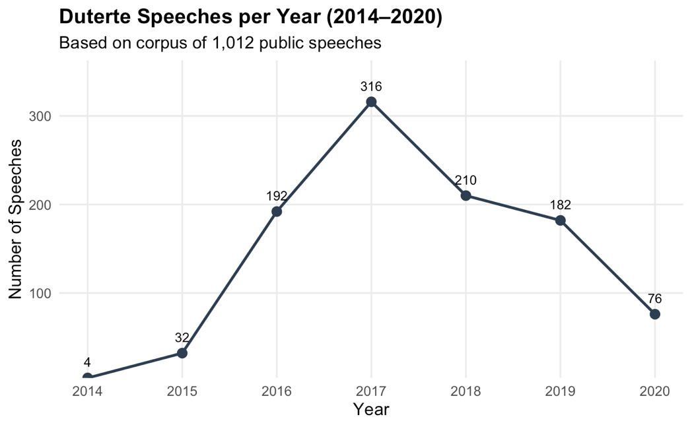
An exploratory look at the data showed Duterte delivered the greatest number of speeches in 2017, with 316 speaking events given (nearly daily when spread across the year). This was followed by 210 speaking events in 2018, 192 in 2016, and 182 in 2019. It should be noted that Duterte assumed office in June 2016 and the height of his drug war took place from this point until 2018. Majority of police operations took place from June 2016 into 2017, while complaints were filed before the ICC in April 2017.10 Intense international scrutiny on Duterte's drug war prompted the president to pull the Philippines out of the ICC in March 2018. The decision took effect a year later in March 2019.11
Considering the timeline of these key events, data for the project is subject to several limitations. For context, Duterte's current case at the ICC covers his actions as Davao City mayor and Philippine President from 2011 to 2019. The corpus currently does not include Duterte's speaking events from 2011 to 2013 owing to a number of factors, including the lack of streamed events covering his speeches and limited national media attention on Duterte's policies in Davao City as mayor. The corpus likewise does not include speaking events from 2021 and 2022, the last two years of Duterte's presidency, because of shifting priorities in the researcher's newsroom that focused on coverage of the Covid-19 pandemic and the lead-up to the 2022 Philippine presidential elections.
Despite this, data from the corpus covers Duterte's final year as mayor, the lead-up to his presidential campaign, the election campaign itself, and the first three years of his presidency — which covered the height of the drug war up until the Philippines left the ICC in 2019. Considering this, the research finds that the corpus is still rich enough to provide a descriptive analysis of Duterte's rhetoric.
This project makes use of four text-as-data methods to provide a descriptive look at Duterte's speaking events from 2014 to 2020: dictionaries and keywords, semantic analysis, topic models, and word embeddings.
As part of analyzing the corpus, several pre-processing decisions and limitations are worth noting. First, data was initially stored as a TXT file that was eventually converted to a TSV file for analysis. In doing so, the research utilized a parsing strategy that anchored on date as a delimiter for all documents since this consistently appeared in all 1,012 speaking events.
The output ended up creating a TSV file with 10 columns — doc_id, date, time, event, format, location, video_link, text_link, summary, and text — which contained the full text of the speaking event. This was based on how the speeches were structured during the data collection process, a sample of which could be seen below:
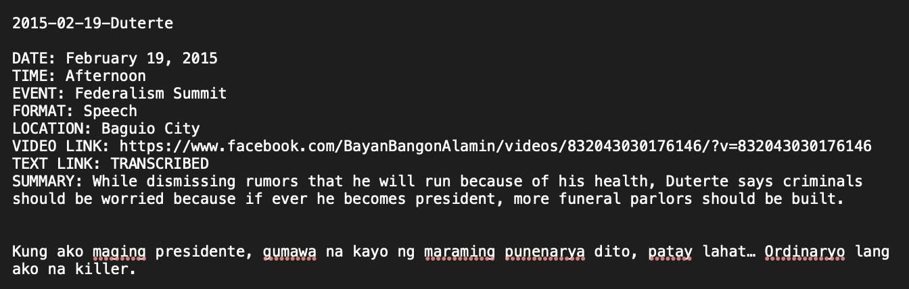
To pre-process the text, a list of Tagalog12 and Bisaya13 stopwords hosted on GitHub provided the foundation for a list of stopwords. Based on the researcher's knowledge, several words were added to the list of Filipino stopwords after several iterations of pre-processing and a look at the top 100 words used in Duterte's speaking events. Conversely, the researcher had limited knowledge of Bisaya. Owing to this, the list of Bisaya stopwords is not as extensive as the Filipino stopwords and could add noise to the analysis of patterns and trends seen across Duterte's speaking events. Confronting this, however, the research leaned on the side of keeping the list of Bisaya stopwords at its current state instead of trying to build it further, to avoid the risk of adding words that could strip the speaking events of important context.
In addition, a list called “speech stopwords” also filtered out common words Duterte or transcribers included in the text that did not add context or meaning to Duterte's overall rhetoric. These stopwords included words like “applause,” “translation,” “inaudible,” “kindly,” “sit,” “just,” “like,” “president,” “ladies,” and “gentlemen,” among others. Following this, standard pre-processing steps were taken to remove numbers, punctuation, URLs, symbols, and stopwords, and to make the text lowercase. No stemming was done to keep words in their original form.
Following these steps, a search for the top 100 most frequent terms used by Duterte was conducted (a full list of this can be found in the attached PDF/markdown file). This descriptive look also included creating a word cloud to capture these features, as seen below:
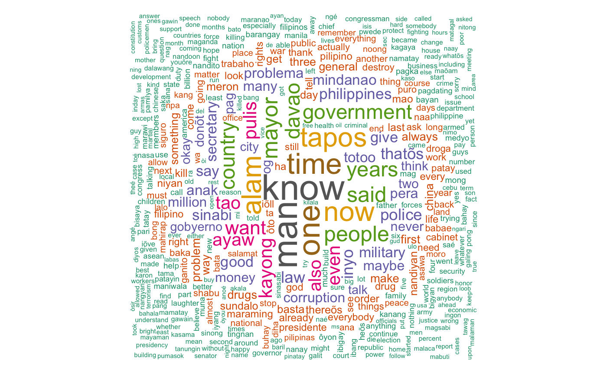
From this, some words already start to stand out. This includes “know” used 8,565 times, “man” used 8,345 times, “tapos” — which can translate to “done,” “finished,” or “after” — used 6,282 times, “pulis” (police) used 3,925 times, “police” itself used 3,179 times, “military” used 2,807 times, “problema” (problem) used 2,702 times, “problem” itself used 2,103 times, “corruption” used 2,509 times, “drugs” used 2,037 times, “kill” used 1,776 times, and “destroy” used 1,461 times.
Building on this, co-occurrences were used to start building a dictionary for drug war terms. To do this, some generic terms were used to filter through the speaking events and build a feature co-occurrence matrix. In particular, the following seed terms were used: drugs, drug, droga, shabu, kill, criminal, police, pulis, patay, patayin. From there, the 15 most frequent co-occurring words for each seed term were found and plotted below:
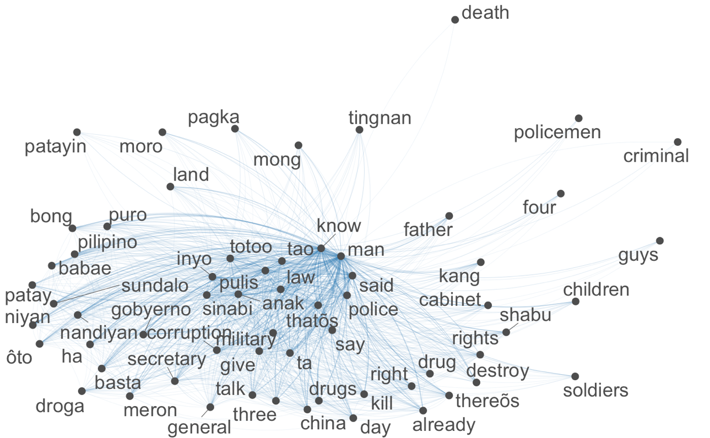
Relevant words were then used to start building a drug war dictionary for later analysis.
First, the research utilized dictionaries and keywords to explore the frequency of key words in a drug war dictionary created for Duterte's speeches. In building the drug war dictionary, the research used descriptive inference methods like co-occurrences to find words that tend to occur together whenever Duterte spoke, and to find words that may have semantic proximity to words used by Duterte when talking about the drug war. This method added some 31 more words to the researcher's own drug war dictionary, coming to a total of 65 terms. The full list of which is below:
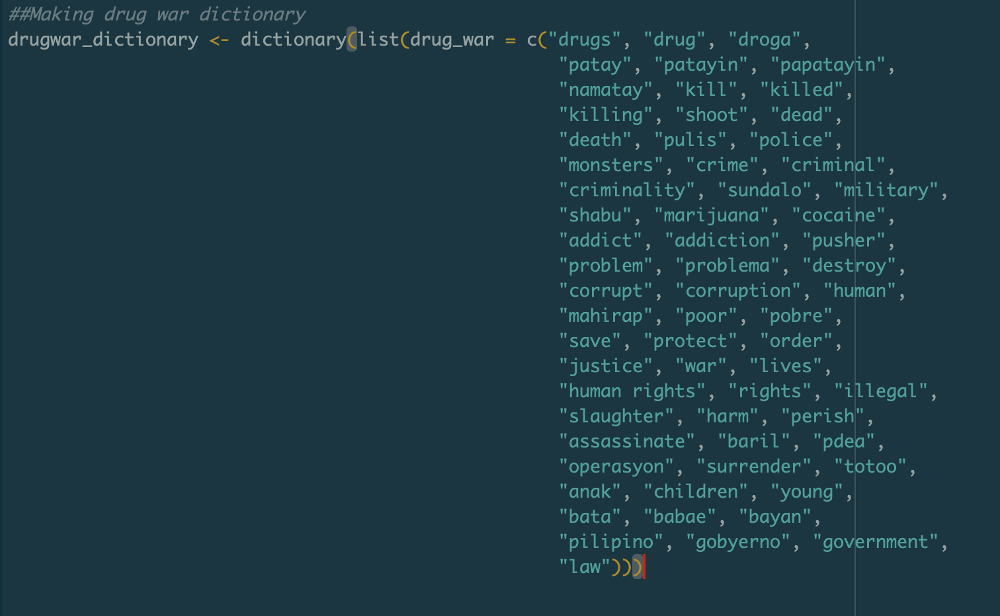
This dictionary was then used to explore how frequently these terms were used over time in Duterte's speaking events. From the results below, which were normalized to take into account the varying number of speeches Duterte would give each month, it appears that Duterte talked most about the drug war (measured by terms in the drug war dictionary) in the first quarter of 2018 and the first quarter of 2019 — that is, from January to March of the corresponding years. This makes sense considering the timeline of the Philippines' withdrawal from the ICC. In particular, Duterte announced he would withdraw the country from the international court in March 2018,14 after it opened an investigation into his drug war. The decision took effect a year later in March 2019.15
Apart from this, it also appears that while drug war language was minimal from 2014 to 2015, it quickly ramped up in mid-2016, around the time Duterte took office and launched his drug war as national policy. From that point on, it never drops back to pre-presidency levels, save for the first quarter of 2020, which was around the time the Covid-19 pandemic hit and government messaging shifted to lockdown measures.
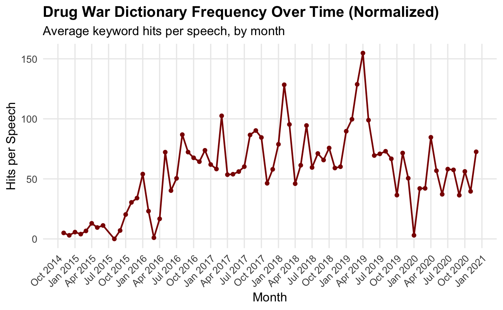
In addition, the overall high frequency of drug war terms supports the finding that the drug war was not only a policy sustained throughout Duterte's presidency, but also a discursive project he built over a decade, supporting the timeline of ICC investigations.
Sentiment analysis methods were also used to understand the overall sentiment of his speeches and to explore the top negative and positive sentences Duterte delivered. By using such methods, the research aimed to explore patterns of negativity and positivity in Duterte's speeches and whether changes could be observed in relation to key events such as the 2016 presidential elections, the first year of Duterte's presidency, and the Philippines' withdrawal from the ICC.
One key constraint limited the semantic analysis of Duterte's speaking events: the frequent code-switching he engaged in as a habit of speech. Considering that the sentiment package reads only English, Tagalog and Bisaya statements may likely be read and scored as neutral — masking the overall true sentiment of Duterte's rhetoric.
Despite this, the results offer some interesting findings. First, sentiment plotted by individual speaking events surprisingly shows Duterte's speech skewing positive. Considering language constraints, this is not surprising since Duterte's English-dominant speaking events were often delivered at ceremonial or diplomatic occasions like inaugurations, state visits, or multilateral events like Association of Southeast Asian Nations summits.
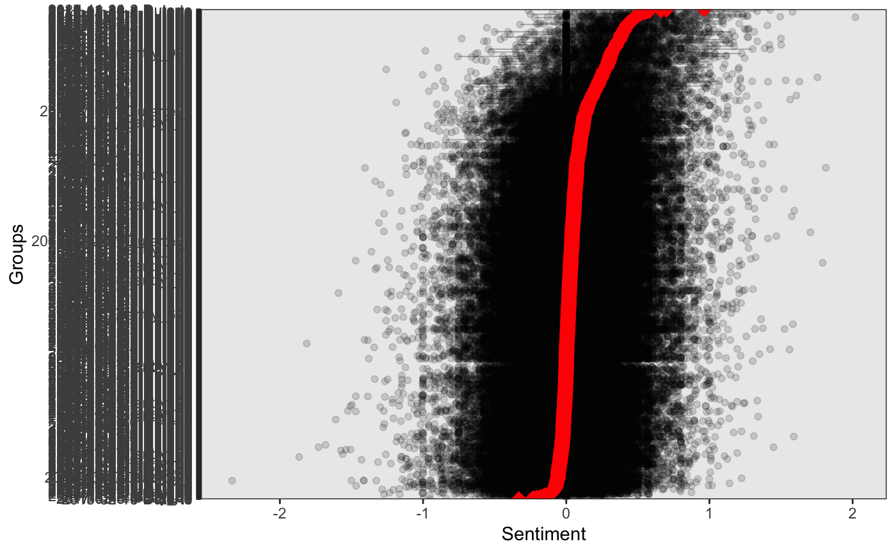
A further look at the top 40 most positive sentences confirms this finding. For one, the top 10 most positive sentences below are characterized by formal language and show Duterte was his most diplomatic in international fora or before audiences composed of members of the business community:
| Rank | Score | Speech | Sentence |
|---|---|---|---|
| 1 | 2.020 | 2018-11-20-2-Duterte | A lot of work remains, but President Xi's visit gives us new impetus to our mutual efforts to enhance collaboration in ensuring the well-being of our peoples and contributing to peace and stability in the region. |
| 2 | 1.813 | 2018-04-21-Duterte | With unity and cooperation, we can build a truly robust nation where opportunities for growth abound and where citizens enjoy a prosperous and comfortable life. |
| 3 | 1.754 | 2020-03-24-Duterte | To the gracious members of the private sector who are foregoing profit to alleviate the suffering of our people; to the valiant volunteers who are bravely supplementing our frontliners; and to the noble civil society organizations who are working tirelessly in calling for donations and performing charity work — thank you very much for your kindness, compassion and generosity. |
| 4 | 1.705 | 2018-05-24-Duterte | Aside from this bridge being widened from four to six lanes, it is now made a much better and more durable — made of durable materials as well as equipped with various installations and markers for the safety and convenience of both vehicular and pedestrian traffic. |
| 5 | 1.628 | 2018-11-7-2-Duterte | Working together, let us build a truly robust society where prospects for growth abound and where citizens enjoy a prosperous and comfortable life. |
| 6 | 1.593 | 2018-12-13-Duterte | To Senator Manny Villar, may you have more years to come and I hope that you will continue to inspire and help more Filipinos who also want to uplift their conditions and enjoy more comfortable and progressive lives. |
| 7 | 1.589 | 2016-08-21-Duterte | The Human Rights Commission, I don't know why but they would insist in counting the dead criminals and never make a comparison of the dead victims, innocent people, law-abiding people being killed in the streets at the same time last year. |
| 8 | 1.580 | 2016-11-19-1-Duterte | Mr. President, before I begin, I'd like to thank you very much for your warm hospitality and excellent arrangements extended to us in the Philippine delegation during my State Visit to Beijing. |
| 9 | 1.564 | 2019-06-6-Duterte | Let today's joyful celebration remind us that we need to work in solidarity with one another so that we can achieve a common dream for a more peaceful, just and prosperous Philippines. |
| 10 | 1.532 | 2017-11-9-1-Duterte | We would like to work with you not only to pursue growth through regional economic integration, but also to forge a more humane world characterized by shared peace and optimism in the future. |
Notably, Duterte was likewise most “positive” and diplomatic when he stuck to his prepared remarks. Often, however, the president would speak extemporaneously, which could be seen in later findings on topic models where drug war rhetoric permeated his speeches regardless of topic.
A breakdown of sentiment plotted by month also shows that Duterte was quite consistent with this rhetoric over time, as the average sentiment (red line) stays close to 0 for most of the corpus' time period. The spread of sentiment scores mostly from −1 to 1 every month also shows that even if average sentiment was close to 0, Duterte wasn't neutral but rather simultaneously very negative and very positive within the same months and in the same speech. In other words, the spread points toward the finding that Duterte often mixed diplomatic language with more negative or violent rhetoric.
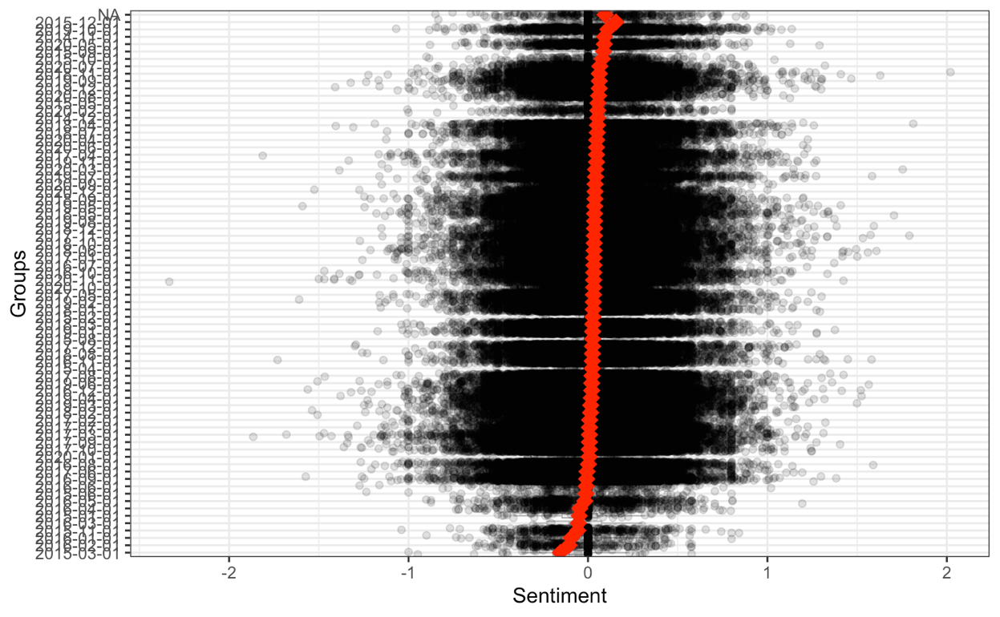
Again, a look at the top 10 of the top 40 most negative sentences reinforces this finding. For instance, at a speaking event on March 8, 2017, Duterte's extemporaneous speaking style meant he could say a diplomatic sentence — thanking President Xi Jinping and the Chinese people for their generosity — at one point in his speech, and also switch to ordering violence when talking to an audience of media and local councilors (see Rank 6, negative sentences).
| Rank | Score | Speech | Sentence |
|---|---|---|---|
| 1 | −1.812 | 2017-04-29-6-Duterte | Whatever was the crime: rape with homicide and robbery; robbery with rape, homicide; or homicide, rape. |
| 2 | −1.525 | 2020-12-07-Duterte | Ronnie E. Ponferrada – neglect of duty, misconduct, gross neglect; Virgilio Abragan – grave misconduct; Wilfredo Factoranan – gross neglect of duty pati si Mario Tubania; Pedro Gerena – dismissed for grave misconduct; Rolando Palca – dismissed for [gross neglect of duty]; Engr. |
| 3 | −1.496 | 2017-03-29-Duterte | But if they confront you with a violent resistance especially if they are armed, and you are in danger of being killed, my God, shoot the idiot and shoot him dead. |
| 4 | −1.471 | 2017-03-13-Duterte | Robbery, after robbing you rape, then you steal… Robbery with rape or robbery with homicide, that's a special complex [trial?] Robbery with homicide, or robbery rape with homicide, it should be… Retribution eh. |
| 5 | −1.467 | 2017-08-16-1-Duterte | Well, hindi 'yung ano… 'Yung the… Well, of course, we are all bleeding hearts here because most of you are really victims of crime and criminality and extreme negligence. |
| 6 | −1.430 | 2017-03-8-Duterte | But if they resist violently, placing your life in danger, shoot and shoot to kill. |
| 7 | −1.386 | 2016-10-13-Duterte | And because they are suffering – suffering heavy losses, you know, there's always a time for retaliation and everything. |
| 8 | −1.379 | 2019-04-21-Duterte | Maybe only for mayor, but that would be — this would be my last term of… Inday vice mayor. |
| 9 | −1.322 | 2019-09-10-2-Duterte | You know, the social dysfunction created by the drug problem is very enormous, painful, and sorrowful for me and for you. |
| 10 | −1.315 | 2020-11-5-Duterte | But most of this 'yung misconduct-misconduct, actually that's the administrative term pero kung sa – tingnan mo 'yang mga crime nila in the penal side, mga falsification 'yan, malversation. |
Third, topic models were used to understand how often Duterte spoke about drugs and to confirm if drugs were in fact a dominant topic in Duterte's rhetoric over the course of the six years covered by the corpus. For the use of topic models, a bigram document-feature matrix was created to add more nuance and context to results. In addition, the research initially utilized a K value of 5 and 8, but increased to 10 to get more granular distinctions between topics based on the most frequent and exclusive words found for the top 10 topics of Duterte's speeches.
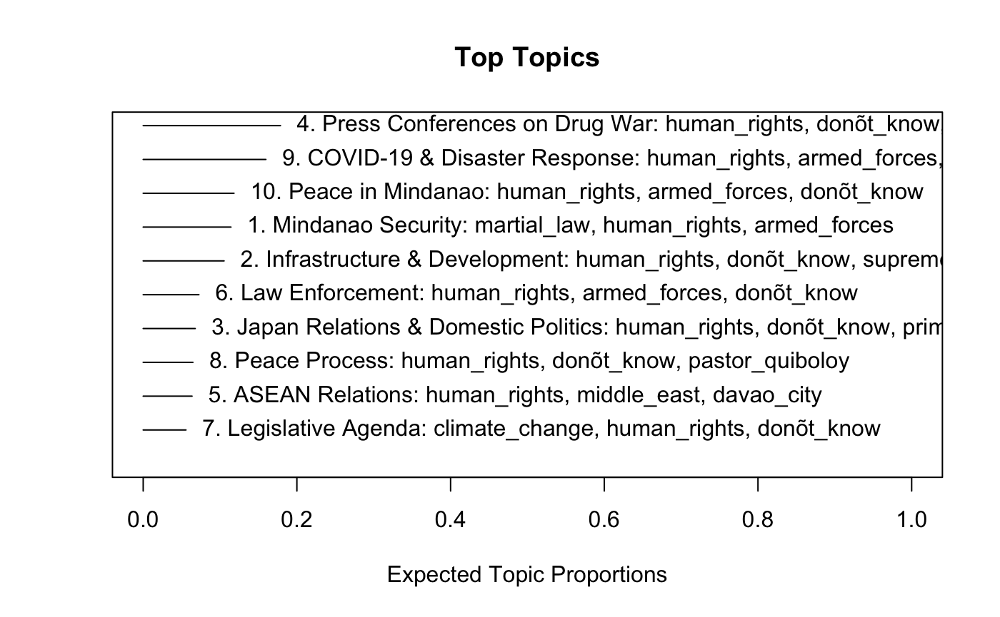
Reviewing the results above, it can be seen that “human_rights” and “armed_forces” permeate as some of the highest-used words despite the topic. The chart also shows that Topic 4 — press conferences on the drug war — had the highest proportion in the corpus. For this topic, FREX words included: sec_lape, audience_reacts, ms_macas, ninja_group, lape_yes, ms_lacorte, cars_program, group_ninja, land_group, ms_palo — the majority of which refer to reporters' last names.
Based on contextual knowledge of the topic, the fact that “human rights” is present in all topics further points to the fact that Duterte didn't confine drug war rhetoric to specific occasions but embedded it across governance, diplomacy, and media interactions, as evidenced by the rest of the topics containing these words.
Finally, the research utilized word embeddings to understand and explore semantic relationships that exist with the word “drugs” in Duterte's speeches. Design choices here included setting the context window to 5 words, as larger context windows often appeared to group words by language rather than semantic or syntactic relationship, since Duterte often code-switched between English, Tagalog/Filipino, and Bisaya when speaking.
For exploratory purposes, the researcher initially used principal component analysis to reduce the word embedding vectors to two dimensions and examine some semantic and syntactic relationships. A random 150-word sample plotted below shows that there is still some language splitting between English and Filipino words.
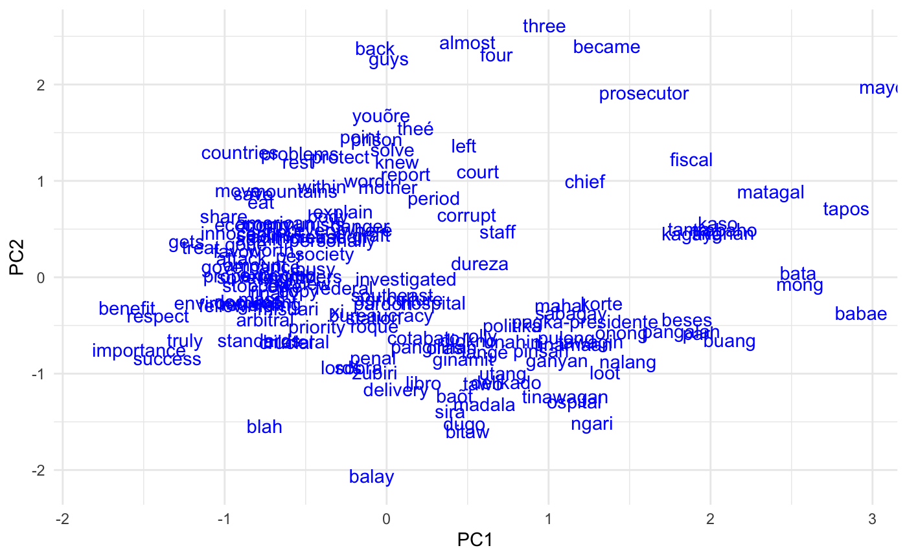
Despite this, some findings emerge. For one, on the center-bottom, words like “dugo” (blood), “bitaw” (let go), “sira” (broken and/or crazy), “penal,” “priority,” and “politika” (politics) sit near each other, describing some of the more general mix of violent language mixed with more governance-related terms.
To try to understand semantic relationships between some key terms in the drug war and the corpus, further embedding methods focused on the words “drugs” and “kill.”
From this, results showed that apart from other various ways to say drugs like “drug” and “droga,” words most similar to “drugs” included “country,” “stop,” “corruption,” “illegal,” “destroy,” “kill,” and “criminality,” among others. Considering these words range from 0.43 to 0.3, there seems to be a considerably strong to moderate contextual relationship with the word “drugs” itself.
Similarly, words most similar to “kill” included terms like “destroy,” “country,” “criminals,” “crime,” and “drugs,” ranging from 0.64 to 0.34, suggesting a stronger contextual relationship.
Some final word math (drugs + kill − criminal) aimed to understand what patterns might emerge if Duterte's drug war rhetoric is stripped of terms with criminal framing or context. Results show that violent rhetoric persists even without the criminal conceptual framing. Words like “destroy” (0.54), “die” (0.27), and “war” (0.25) remain prominent. Interestingly, “children” (0.31) also becomes more prominent, perhaps owing to Duterte's framing of his drug war as one way to “save” future generations.
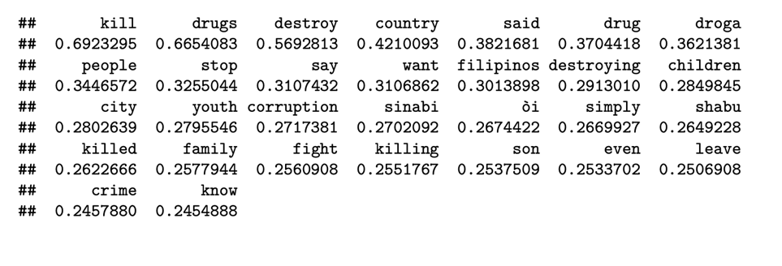
Moreover, words like “treatment,” “health,” “arrest,” “trial,” or “rehabilitation” are notably absent, providing some support for critics' arguments that Duterte's drug war should've been, but was never, framed as a public health problem.16
When considering what this could mean for a parsing of Duterte's rhetoric at the ICC trials, one could argue that his drug war rhetoric wasn't exceptional; it was embedded in his normal discourse. The sentiment analysis revealed that Duterte maintained a dual register throughout his presidency: he could threaten to kill drug users and praise ASEAN cooperation in the same week, sometimes in the same speech. His average monthly sentiment hovered near zero not because intensely negative and positive language coexisted, not because his language was neutral.
In this sense, one could argue that Duterte normalized violent drug war rhetoric by weaving it into the fabric of routine presidential discourse rather than confining it to dedicated speeches. The structural topic model reinforced this finding, as the drug war did not emerge as a standalone topic but instead permeated discussions across press conferences, law enforcement briefings, and diplomatic events. Taken together, findings on the frequency of drug war terms, Duterte's consistent sentiment over time, and the distribution of topics show that violent and drug-related language were a constant presence in Duterte's speeches from 2014 to 2020.
On the other hand, one can also argue that these findings on Duterte's rhetoric alone may not be sufficient to prove responsibility for crimes against humanity, because negative language is often diluted by more formal, positive language when averaged across full speeches. Additionally, the sentiment analysis was constrained by its reliance on English-language lexicons. Tagalog and Bisaya sentences, which likely contained some of the harshest drug war rhetoric, were likely scored as neutral because sentiment tools could not process them. Deeper knowledge of text-as-data methods, including the wrangling of Filipino and Bisaya sentiment, could address these language constraints in future research.
Findings from word embeddings, however, provide compelling evidence of the rhetoric patterns underlying Duterte's drug war. The cosine similarity analysis revealed strong semantic relationships between “drugs” and violent terms like “kill” and “destroy.” Crucially, the semantic neighborhood around “drugs” was dominated entirely by criminal and security framing, with no public health language such as “rehabilitation,” “treatment,” or “health” appearing among the nearest neighbors.
Word vector arithmetic further demonstrated that subtracting “criminal” from the combined drugs-and-kill vector changed little. The same violent terms persisted, suggesting that the violence in Duterte's rhetoric was not contingent on criminal justice rationale but existed as part of his policy against drugs.
Building on this, patterns and trends in Duterte's speech should be grounded in case-building and documentary evidence that could further strengthen arguments that other elements of crimes against humanity — particularly that the drug war was widespread and systematic, and that Duterte had knowledge of plans and a structure for carrying out the campaign — were in place.
Taking stock, the descriptive analysis presented here establishes that Duterte publicly and repeatedly articulated a framework in which drugs were a national threat, killing was a response, and legal or health-based alternatives were absent from his discourse. Whether this rhetoric translated into command responsibility remains a question for legal analysis beyond the scope of this project.
Bascos, Vincent. “Duterte on how to fight crime: 'It had to be bloody.'” Rappler. July 3, 2015. rappler.com/philippines/elections/98306-duterte-fight-crime
Balagtas-See, Aie. “Were Duterte's Speeches Orders to Kill or Hyperbole? – The New York Times.” February 27, 2016. Accessed April 30, 2026. nytimes.com/2026/02/27/world/asia/rodrigo-duterte-icc-trial-hague.html
Buan, Lian, and Jodesz Gavilan. “Duterte Throws Out Decade-Long Fight for the International Criminal Court.” Rappler. March 13, 2019. rappler.com … philippines-duterte-withdrawal-international-criminal-court
Diaz, Gene. “Stopwords Tagalog (TL).” GitHub. Accessed April 16, 2026. github.com/stopwords-iso/stopwords-tl
Ellis-Petersen, Hannah. “Rodrigo Duterte to Pull Philippines out of International Criminal Court.” The Guardian. March 14, 2018. theguardian.com … pull-philippines-out-of-international-criminal-court-icc
Esmaquel, Paterno. “Complaint vs Duterte Filed Before Int'l Criminal Court.” Rappler. April 24, 2017. rappler.com/philippines/167818-complaint-duterte-international-criminal-court
Evangelista, Patricia. “OPINION: Rodrigo Duterte Is a Man of His Word.” Rappler. March 11, 2026. rappler.com/voices/thought-leaders/rodrigo-duterte-power-words-kill-drug-war
Evangelista, Patricia. “This Is Where They Do Not Die.” Rappler. November 25, 2017. rappler.com … impunity-series-police-killings-quezon-city-ejk
Evangelista, Patricia. “The Bully.” Rappler. March 31, 2016. rappler.com/features/nation/elections/126341-the-bully-rodrigo-duterte
Gavilan, Jodesz. “Rodrigo Duterte's Own Words Used Against Him at ICC Pre-Trial Hearing.” Rappler. February 23, 2026. rappler.com … icc-prosecution-uses-rodrigo-duterte-drug-war-own-words-against-him
Geronimo, Jee. “Drug Addiction Is a Health Problem. Somebody Please Tell the President.” Rappler. June 29, 2017. rappler.com/philippines/174021-drug-addiction-duterte-war-drugs
Nierenberg, Amelia. “Duterte to Stand Trial for Crimes Against Humanity at ICC.” New York Times. April 23, 2026. nytimes.com/2026/04/23/world/asia/duterte-icc-trial-drug-war.html
News Agencies. “Philippines Officially Out of the International Criminal Court.” Al Jazeera. March 14, 2019. aljazeera.com … philippines-officially-out-of-the-international-criminal-court
Nunez, Emmanuel. “English, Tagalog, and Cebuano Stop Words in Python.” Accessed April 26, 2026. github.com/eanunez/stop_words
Ramzy, Austin. “Philippines' New President, Rodrigo Duterte, Vows Tough Stance on Crime.” New York Times. June 20, 2016. nytimes.com/2016/07/01/world/asia/philippines-duterte.html
Sarao, Zacarian. “'Kill Them All': Policy That Triggered ICC Case vs Rodrigo Duterte.” INQUIRER.net. February 16, 2026. globalnation.inquirer.net/309281 …
Sotelo, Gabriel Cardinoza, and Germelina Lacorte Yolanda. “Duterte 'Eyes' Presidency in 2016 to Save PH from 'Disaster.'” INQUIRER.net. February 19, 2015. newsinfo.inquirer.net/673999 …